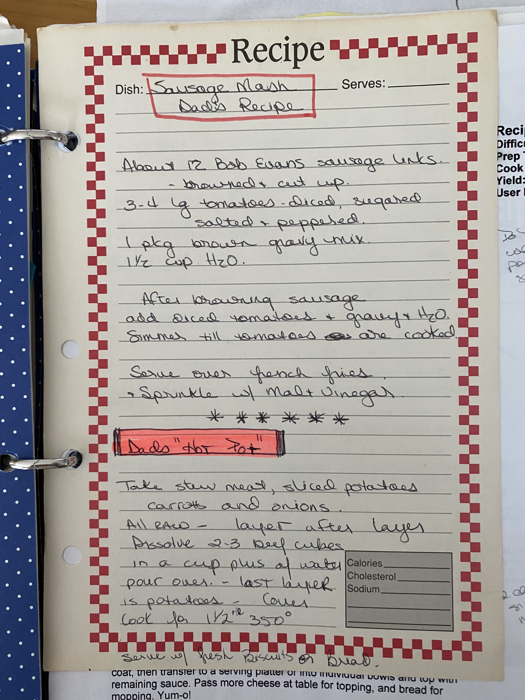

Home
Grandpa's Sausage Mash

Description
A Barrett family classic. We've all had it. It's salty, vinegary, and delicious. British comfort food. Although brits aren't excatly known for it. Vernon George Barrett sure was.
Ingredients
- About 12 Bob Evans sausage links
- 3-4 lg tomatoes, diced, squared, salt and peppered
- 1 pkg brown gravy mix
- 1 1/2 cup of water
- Malt Vinegar
Instructions
- Brown the sausage in a skillet, slowly over low-medium heat
- Add diced tomatoes, gravy, and water- simmer until tomatoes are cooked
- Serve over french fries and sprinkle with malt vinegar
